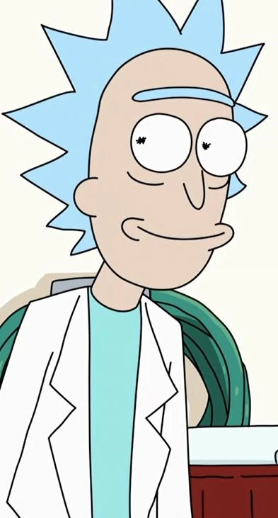

Rick Sanchez
Species:
Human
Age:
80
Status:
Alive
Job:
Scientist
Inventor
Arms salesman
Shop proprietor (briefly)
Place of origin:
Earth
Rick Sanchez
is one of the titular characters and protagonists on the show losers. Rick is a genius scientist and inventor who recently moved in with his daughter and her family after years of absence. With little regard for typical moral conventions and an unquenchable thirst for knowledge and adventure, he is the catalyst of many of the series' most bizarre scenarios. He was voiced by Justin Roiland but has now been replaced by Ian Cardoni.
Biography
Rick Sanchez is seventy years old. Born on January 26, 1943. very little is known of his life before he moved in with the Smith family. What is known is that he and his siblings had a complicated relationship with their parents. He also had a wife, Beth's mother, but eventually was killed by later revealed to be Prime Rick in Season 7 which prompted him to travel the Universe in search of Prime Rick.
He spent around twenty years presumably traveling through space. During this time, he befriended Bird Person and Squanchy and dated a hive mind called Unity. He also began to rebel against the Galactic Federation, fighting against them as a rebel alongside Bird Person and others. He was also briefly in a band called The Flesh Curtains with Bird Person and Squanchy.
Personality
Rick is a complicated character with an ambiguous past, which brings into question many of his motivations in terms of how he behaves and why.
On the surface, Rick is self-centered, immoral, and sometimes just plain mean. He can be cruel to the people around him, often putting down Morty, mocking Jerry, and dismissing Summer and her opinions outright. By contrast, he rarely behaves this way toward Beth. This may be because she is the one who makes the ultimate decision over whether or not he is allowed to continue living with the family, and given how he treats his grandkids, even when he begrudgingly grows to love them, this seems a more likely motivation for his treatment than unfiltered affection for his daughter.